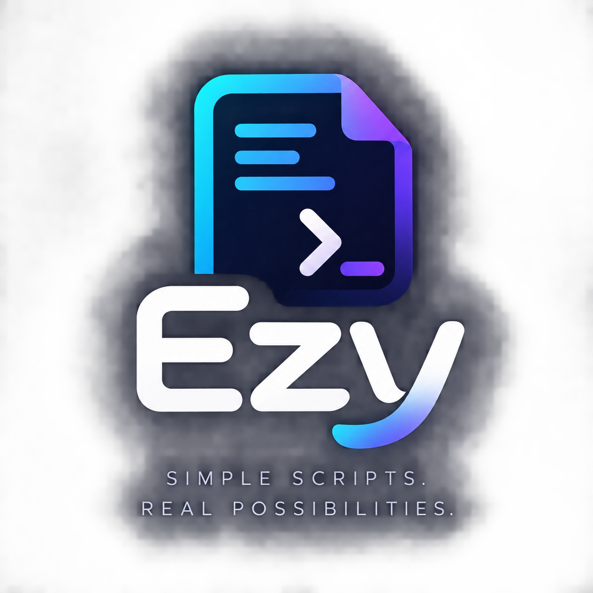

create, write, append, read, delete, and list — with real error messages, not stack traces.

A scripting language you can read like instructions.
Ezy is built for automation — files, processes, HTTP, and JSON are first-class, the syntax stays close to plain English without becoming a natural-language parser, and nothing about the runtime depends on AI.
# hello.ezy
name = "World"
say "Hello, {name}!"
# files and conditions read like sentences
if file "config.json" exists
config = parse_json(read "config.json")
say config.name
# HTTP, structured, no curl flags to memorize
response = get "https://api.example.com/users"
if response is successful
for each user in response.json
say user.nameBuilt for automation, not general demos
files
processes
run commands without a shell, so nothing you pass in can be interpreted as shell syntax.
http
get, post, put, patch, delete with headers, query params, JSON bodies, and timeouts.
json
map and list literals already are JSON — parsing and pretty-printing are one call away.
concurrency
a parallel block runs independent requests on their own threads and waits for all of them.
deterministic
the lexer, parser, and interpreter are plain code. no model sits in the execution path.
Clear error reporting
When things go wrong, Ezy pinpoints the exact location of the error instead of dumping a stack trace:
Error: Syntax Error: expected expression
backup.ezy:1:18
1 | files = list files in
| ^Official Formatter
Ezy includes a built-in deterministic formatter (ezy fmt) that standardizes indentation, spacing, and blank lines, while safely preserving your comments.
Before:
# user script
let x=10
if x>5
say "big"After:
# user script
let x = 10
if x > 5
say "big"Get started
-
Clone the repository
git clone https://github.com/SinghCod3r/ezy.git cd ezy
-
Install it
pip install -e .
Needs Python 3.9+. On a system that blocks global pip installs, add
--break-system-packagesor use a virtual environment. -
Run a script
ezy run examples/hello.ezy
Documentation
Language reference
Every statement and expression: variables, types, conditions, loops, functions, files, processes, HTTP, JSON, errors, modules, and the CLI.
Architecture
How source becomes tokens, an AST, and a result — lexer, parser, tree-walking interpreter, and the standard library.
Security
How process execution avoids shell injection, how HTTP handles TLS and credentials, and what is not sandboxed.
Limitations
An honest list of what's implemented, partial, and planned — plus a few deliberate deviations from the original design brief.